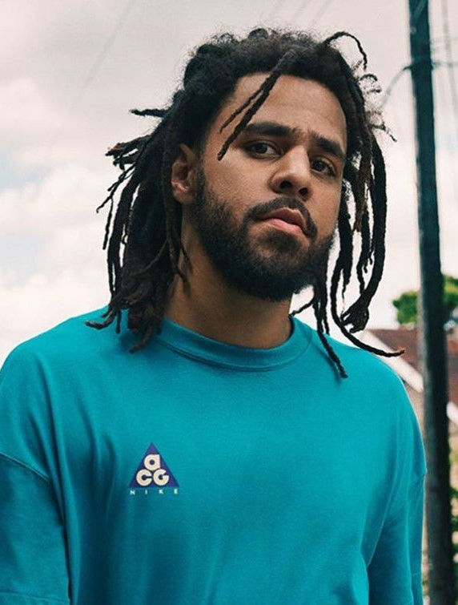
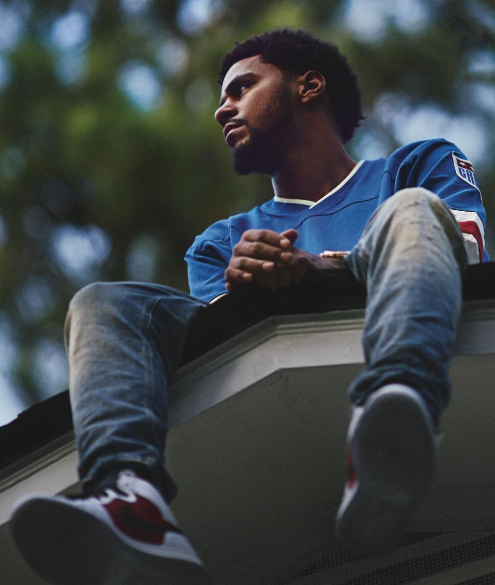

Élete
|  | Cole 1985. Január 28.-án született egy Amerikai katonai bázison Frankfurtban. Apja katona volt, anyja pedig postásként dolgozott az Amerikai hadseregnél. 8 hónapos korában az Észak-Karolinában található Fayettevillebe költöztek.
A többnemzetiségű lakóközösségben nőtt fel, emiatt már fiatal korában érdeklődést mutatott a kosárlabda és a zene felé. 2003-ig a Terry Sanford Zenekarban hegedült. Tizenkét évesen kezdett rappelni, és 2000-ben kezdte komolyan venni, miután ajándékba kapott egy ASR-X sampler szintetizátort. Miután elballagott középiskolából New Yorkba költözött, és a St.John’s Egyetemre járt eredetileg számítástechnika szakon, de később kommunikáció és üzleti szakon végzett 2007-ben, ám diplomáját csak 2015-ben vehette át, ugyanis egy könyv árával tartozott az egyetemi könyvtárnak. Cole 2008-ig különböző munkákat végzett otthonában, Fayettevilleben, miközben több füzetet töltött meg ötleteivel, illetve több korai zenét is közzétett az interneten először Blaza, majd Therapist néven. Ezen felül megalapította saját kiadóját is DreamVille Records néven. 2009-ben Cole szerepelt Jay Z The Blueprint 3 albumán, illetve sok nagy előadó által készített mixkazettán. Megjelent első jelentősebb munkája, a The Warm Up című mixtape. Következő évben bekerült az XXL magazin top 10 új hip-hop előadója közé, ezután olyan előadókkal szerepelt mint Wiz Khalifa, Miguel, Young Chris, vagy DJ Khaled. 2011. szeptember 27-én jelent meg első albuma a Cole World: The Sideline Story, ami a US Billboard 200 listáján elsőként végzett, 218 ezer eladott példánnyal az első héten. Második nagy albumát 2013-ban jelentette meg Born Sinner címmel, illetve ugyan ebben az évben kihozta Truly Yours kisalbumát is. Legnagyobb sikerét azonban 2014-ben érte el, amikor is megjelent a 2014 Forest Hills Drive című lemeze, amin olyan számok szerepeltek, mint a „Wet Dreamz”, a „No Role Modelz” vagy a „G.O.M.D”. Az album több platina és arany elismerést kapott, illetve jelölték az 58. Grammy díjátadón is, a legjobb rap album kategóriában. Két évvel később megjelent 4 Your Eyez Only című lemeze, ami szintén átütő sikert aratott. 2018-ban jelent meg eddigi utolsó, KOD című albuma, ami összességében a Forest Hills Drive után a legsikeresebb munkája. Legnagyobb számai a lemezről a „ATM” és a „Kevin’s Heart”. Következő albumát 2021-ben tervezi kiadni, már a KOD megjelenése után bejelentette, hogy készül a projekttel. |
|  |